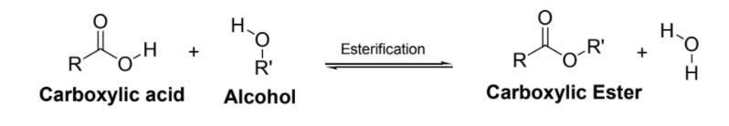
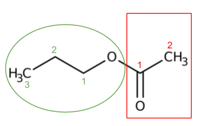
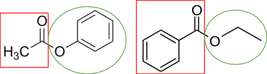
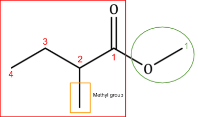

In this experiment, a carboxylic ester is produced from a carboxylic acid (RCOOH) and an aliphatic alcohol (R”OH) (Figure 1). This reaction is termed esterification reaction, a type of substitution reaction, in which the hydrogen in the RCOOH group is replaced by a hydrocarbon (R’ or Ar). Thus, carboxylic esters have the general formula RCOOR’ where R and R’ may be an alkyl or an aryl group. Naturally occurring esters in fruits and flowers give them their characteristic smell. For example, 3-methylbutyl ethanoate is artificial banana flavor; octyl acetate is artificial orange flavor. Dietary fats are chemically triglycerides, an ester formed from fatty acids and glycerol (a tri-alcohol).

Figure 1. Esterification reaction
The nomenclature for esters is based on the structure of its components; you must look at the section of the ester containing the carbonyl group (as coming from the carboxylic acid) and the section containing the oxygen atom and the remaining carbon atoms (as coming from the alcohol) (Figure 2). Then, count the number of carbons in those two sections and assign the correct prefix based on the number of carbon atoms (meth-, eth-, prop-, etc.) (Figure 2). The nomenclature for esters is structured so that the alcohol-derived section is referenced first, with the ending -yl (ethyl) and the carbonyl section is referenced second, with the ending -oate (propanoate). In the example below (Figure 2), the carbonyl section has 2 carbon atoms and the alcohol-derived section has 3 carbon atoms, so the formal nomenclature for this molecule is propyl ethanoate.

Figure 2. Diagram for determining nomenclature of esters
When dealing with esters that are not simple carbon chains, the same method is employed. The ester is divided into the two sections and the structures are evaluated. A benzene ring in the alcohol-derived section is called phenyl; the ester shown in figure 3A is called phenyl ethanoate. A benzene ring as part of a carbonyl group (consisting of the 6 carbons of the benzene ring and the carbon of the C=O bond) is called benzoate; the ester shown in figure 3B is called ethyl benzoate.

Figure 3. A) Phenyl ethanoate B) Ethyl benzoate
When dealing with esters with branched carbon chains, again the same method of dividing the ester is used along with a similar method to naming branched alkanes. The ester sections are divided and the longest chain of carbons in each section is numbered and given the appropriate prefix. Numbered carbons that have additional groups attached are identified and named according to their number in the chain and the group attached. For example, the ester shown in figure 4, the carbonyl section has a branched alkane. The longest chain is 4 carbons, so the base name is butanoate (but- because 4 carbons, -oate because it is the carbonyl section). The second carbon in that chain has an additional methyl group attached, so that entire section is named 2-methylbutanoate. The alcohol-derived section of the ester consists of a simple methyl group, so the name of the entire ester is methyl 2-methylbutanoate.

Figure 4. Diagram showing method of naming methyl 2-methylbutanoate
Other groups that may be attached to esters are named in the same method and the group names are the same as in other nomenclature: an -OH group is referred to as hydroxy-, a chlorine atom is referred to as chloro-, and an =O is referred to as -oxo. For example, if the molecule above in figure 4 had a chlorine atom attached to carbon 2 instead of a methyl group, the name would be methyl 2-chlorobutanoate. Molecules that have more than one group attached to the main carbon chain are named in sequential order of the carbons with groups. Methyl 4-chloro-5-oxoheptanoate would have a chlorine attached to carbon 4 and an oxygen atom attached to carbon 5 of the 7 carbon chain in the carbonyl section.
In summary, the method for naming esters begins by dividing the molecule into a section containing the carbonyl group (assumed to be derived from the carboxylic acid) and a section containing the oxygen atom and remaining carbon chain (assumed to be coming from the alcohol component). The longest chains in both sections are numbered and named according to their length; the alcohol-derived section is given the suffix -yl and the carbonyl section is given the suffix -onate. Additional groups are added to the name in sequential order of the base chain.
The nomenclature for an ester can be used to easily identify the carboxylic acid and alcohol from which the ester can be synthesized. The section containing the carbonyl group reflects the structure of the component carboxylic acid and the section containing the oxygen atom and remaining carbon atoms reflects the structure of the alcohol. The ester shown in figure 1 (propyl ethanoate) can be synthesized from an alcohol with 3 carbons (propanol) and a carboxylic acid with 2 carbons (formal nomenclature ethanoic acid, common name acetic acid).
You will observe the typical synthesis and purification of an ester (butyl ethanoate) from a carboxylic acid and an alcohol in this experiment. The esterification of carboxylic acids with alcohols is slow and reversible, usually catalyzed by Lewis of Brønstedt acids (Fischer esterification). The equilibrium may be influenced by either removing one product from the reaction mixture (for example, removal of the water by azeotropic distillation or absorption by molecular sieve) or by employing an excess of one reactant. In our experiment, this is accomplished by adding an excess of carboxylic acid. The unreacted acid is removed by extraction into an aqueous sodium bicarbonate solution (Scheme 1).
2 RCOOH +2 NaHCO3 → 2 RCOO- Na++ H2O
Scheme 1
In your post-lab assignment, you will write a lab report based on the video synthesis of butyl ethanoate and answer theoretical questions on synthesis of other esters by esterification.
Videos
https://www.youtube.com/watch?v=3aq8iJUpW5w